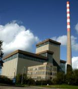

 Climate is changing and in order to meet the impacts and opportunities presented by these changes, adaptation is now required. Greenhouse gases persist in the atmosphere for hundreds of years, so even if we were to stop emitting them tomorrow, the climatic effects of these emissions would stay with us for the foreseeable future. To further compound the inevitability of the climate impacts we must adapt to, a long, slow process of warming of the Earth’s oceans has been underway for many decades, a process that will ensure temperatures and sea levels will continue to rise to throughout the century. As a result, regardless of our efforts to reduce greenhouse gas emissions in order to prevent the worst effects of climate change (known as mitigating actions), adaptation actions are now essential.
In their fourth Assessment Report, the IPCC (2007) defines adaptation as: "adjustments in natural or human systems in response to actual or expected climatic stimuli and their effects, which moderate harm or exploit beneficial opportunities". The aim of adaptation is to reduce society's vulnerability to the impacts of climate change by anticipating changes in climatic conditions and the effects of these changes. Vulnerability is the degree to which a system is susceptible to, and unable to cope with, adverse effects of climate change, including climate variability and extremes (IPCC 2007).
Vulnerability is thus a function of:
Climate change will have both direct and indirect effects on all aspects of Ireland's economy, society, and environment. Human and natural systems will adapt to climate change autonomously to some degree. However, planned adaptation which involves decisions and measures within society to respond to the adverse impacts and opportunities presented by climate change is required. Being prepared for these changes is important and will help to reduce uncertainty. We can act to limit the potential impacts of climate change by identifying risks, evaluating options and starting the adaptation process early enough to ensure that as many alternatives as possible remain available to us.
Adaptation actions aim to manage climate risk at an acceptable level and to take advantage of opportunities that may arise. Broadly, adaptation actions can be classified as:
Adaptation incorporates both steps to build adaptive capacity and to implement of adaptive actions.
Building adaptive capacity involves activities that increase our ability to adapt to climate change. These activities include gathering the information required to understand the particular vulnerabilities to climate change a business, community or area might face providing the information, procedures, tools and supporting structures required as a basis for the delivery adaptation actions.
Implementing adaptive actions refers to implementing actions that will help reduce climate risk and exploit opportunities. These actions might include increasing water conservation measures or planting tree species which are known to have a broad range of tolerances.
Adaptation is an ongoing and iterative process and it is important to integrate adaptation response into planning and decision-making processes. There are a number of key elements to the adaptation process and these are:
As a first step in the adaptation process, understanding your vulnerability to climate change is a good place to start. This involves determining how your interests are affected by current climate trends and the occurence of extreme weather events. This will help you to understand how future climate changes might affect you and will help you to identify your strategic objectives. This assessment can be undertaken by assessing:
Strategic objectives should be developed that will address the priority risk and opportunities identified in step 1. Initially, a range of objectives should be identified.
After identifying a set of objectives, a wide range of adaptation measures should be identified and assessed. On the basis of, amongst other, the relative costs of different adaptation options, a short list of viable adaptation options.
Adaptation options include:
Having considered risks (Step 1) and selecting preferred adaptation options. An implementation plan needs to be developed that states what needs to be done, by whom and when, to convert adaptation options into actions. The implementation of adaptation options will be contingent on the chosen adaptations and being strongly linked to existing policies and procedures.
Adaptation is an iterative process that needs to be closely monitored with regular review to ensure that it remains effective. This step will ensure that the adaptation initiatives are working and to determine whether changes or refinements are required in response to new conditions and information.